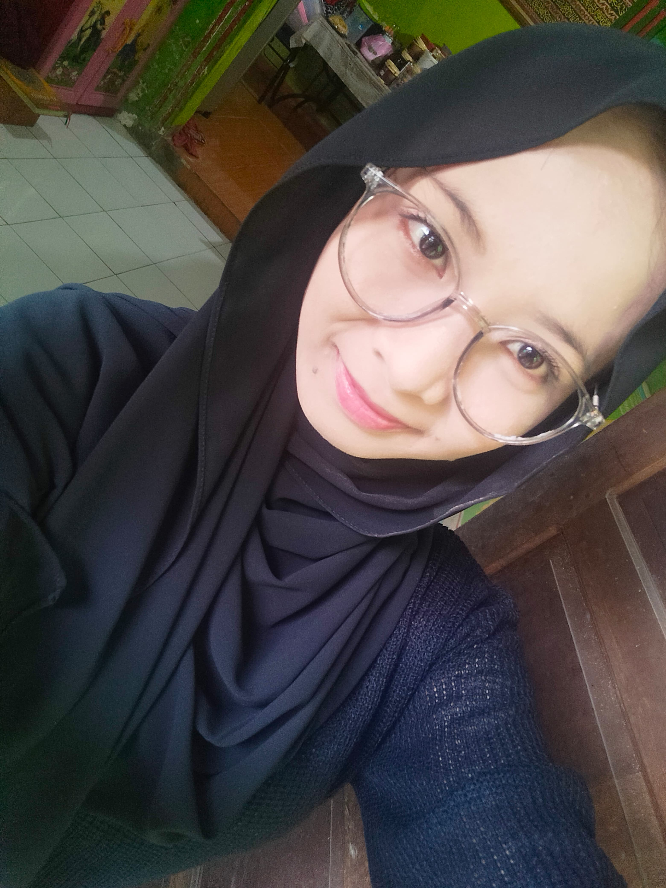

Mahasiswa Universitas Yatsi Madani
Saya adalah seorang mahasisawa ilmu komputer di Universitas Yatsi Madani.Sebagai seorang mahasiswa, saya memiliki tekad untuk tidak hanya fokus pada pencapaian akademis, tetapi juga untuk memperluas wawasan melalui berbagai kegiatan ekstrakurikuler dan pengalaman praktis. Saya percaya bahwa pendidikan tinggi bukan hanya soal teori, tetapi juga tentang mempersiapkan diri untuk tantangan di dunia profesional. Oleh karena itu, saya selalu berusaha untuk mengembangkan kemampuan diri, baik dalam hal kepemimpinan, keterampilan interpersonal, maupun pemecahan masalah, agar dapat menjadi individu yang lebih kompeten dan siap menghadapi masa depan.
2024
host live
mengikuti paskibra sampai tingkat kota
mengikuti organisasi siswa intra sekolah, mengikuti tekwondo,mengikuti pramuka inti
Universitas Yatsi Madani
Email: Adminuym@gamil.com
No. Telepon:081285286889
Website :uym.ac.id
Alamat : Jl. Aria Santika No.40A, RT.005/RW.011, Margasari, Kec. Karawaci, Kota Tangerang, Banten 15114
created by putri shinta rimala